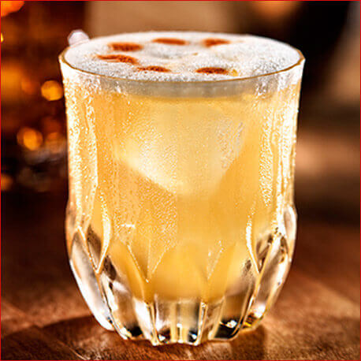

Whisky Sour

Equipment
A shaker
A strainer
Short glass
Ingredients
2 parts bourbon
1 part lemon juice
½ part sugar syrup
½ part egg white
Cubed ice
1 cherry and an orange slice
Best Bars for This Drink
Dandel Yanbar Central Londons luxury version of a botanical garden
Swift A light-filled aperitif bar